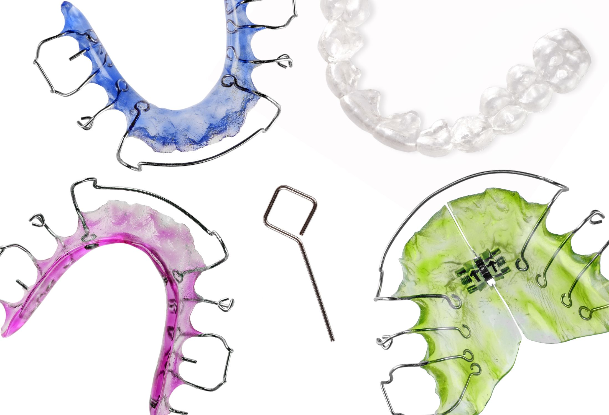

Istnieje wiele rodzajów aparatów ortodontycznych. Ogólnie można je podzielić na wyjmowane oraz stałe.
W naszym Centrum oferujemy wszystkie obecnie dostępne rodzaje aparatów, a rodzaj zastosowanego aparatu uzależniamy od wielu czynników – m.in. wieku Pacjenta, stanu uzębienia, higieny, rodzaju wady i stopnia jej nasilenia, a także oczekiwań samego Pacjenta.
Pacjentom, którzy z różnych powodów (wykonywana praca, poczucie estetyki) nie chcą zakładać standardowego aparatu stałego metalowego, założymy aparaty stałe estetyczne- prawie niewidoczne z zewnątrz, a najbardziej wymagającym- aparaty lingwalne – klejone od strony językowej, zupełnie niewidoczne dla otoczenia.
Najczęściej stosowane u dzieci, składają się z akrylowej płyty oraz elementów wykonanych z drutu, a także elementów dodatkowych, tj. śruby, sprężyny.
Wpływają korzystnie na prawidłowy rozwój układu stomatognatycznego oraz umożliwiają uzyskanie prawidłowego zgryzu i odpowiedniej ilości miejsca dla zębów, pomagają również w zwalczaniu nieprawidłowych nawyków ( tj. obgryzanie paznokci, ssanie palca) oraz dysfunkcji (tj. wady wymowy, oddychanie przez usta).
Najistotniejszym czynnikiem decydującym o powodzeniu leczenia aparatem wyjmowanym jest współpraca ze strony małego Pacjenta.
Aparaty stosowane przez wszystkich, bez ograniczeń wiekowych w leczeniu wad znacznie poważniejszych w porównaniu do leczenia aparatami wyjmowanymi.
Charakteryzują się wyjątkową precyzją działania przez 24 godziny na dobę. Powoduje to szybkie, skuteczne, a zarazem bezpieczne leczenie, przy braku konieczności współpracy ze strony Pacjenta.
Zbudowane z zamków, pierścieni/ rurek, które są mocowane do szkliwa zębów specjalnym klejem oraz łuków (cieniutkie druty), łączących poszczególne zamki za pomocą ligatur/klapek.
Łuki ortodontyczne, posiadają tzw. pamięć kształtu i w trakcie leczenia “powracają” do swojego oryginalnego położenia wywierając stałą siłę na zęby, która przesuwa je w otaczającej kości do odpowiedniej pozycji.
Aparaty zapewniające Pacjentom najwyższą jakość leczenia przy minimalnej widoczności.
Wyróżniamy:
Przykładem może być często stosowany przez ortodontów system DAMON.
W zależności od wieku Pacjenta, rodzaju wady, stopnia jej nasilenia oraz współpracy Pacjenta stosuje się szereg dodatkowych aparatów przyspieszających leczenie danej wady zgryzu tj. maska twarzowa, headgear (wyciąg zewnątrzustny), aparat Herbsta/ Forsus, aparaty stałe grubo-łukowe itp.
Najczęściej stosowane zostały opisane poniżej.
Miniśruby to tytanowe implanty ortodontyczne, dające dodatkowe zakotwienie, celem przyspieszenia leczenia ortodontycznego.
Szczególnie polecane są w przypadku pacjentów dorosłych z licznymi brakami zębowymi, umożliwiając skuteczne i szybkie przesunięcia zębowe, celem dalszego leczenia protetycznego (tj. miejsce pod implanty, mosty).
Uproszczona wersja aparatu incognito jest o wiele tańsza
System Minipłytkek Bollarda konstrukcji profesora Hugo De Clercka:
Wyciągi elastyczne ('gumki przyczepione do danych elementów aparatu') mają na celu wywieranie odpowiednich sił przesuwających zęby/grupy zębowe w zaplanowanym kierunku. Aby siła wywierana przez wyciągi elastyczne była stała konieczne jest ich wymienianie co 1-2 dni. W przeciwnym razie czas leczenia może się wydłużyć. Wyciągi elastyczne mogą zostać usunięte jedynie na czas mycia zębów, posiłków lub zgodnie z zaleceniami lekarza prowadzącego.